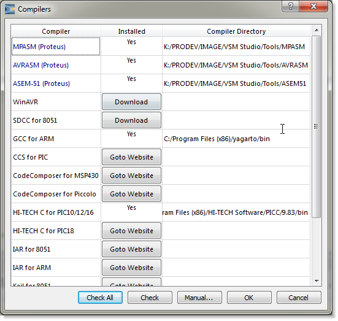
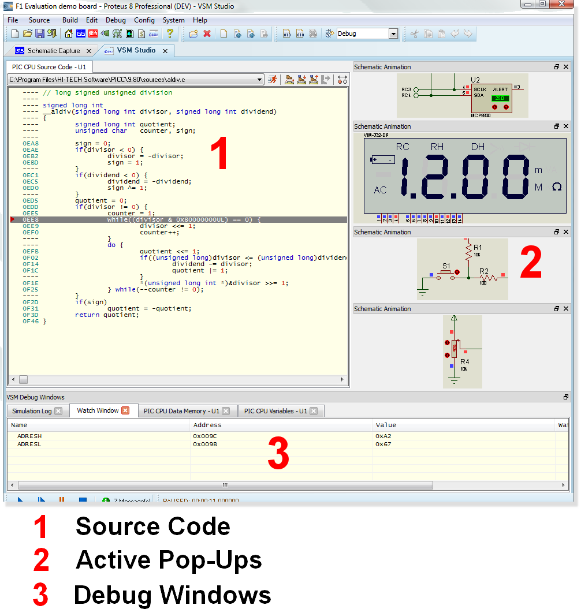

COMPILER SUPPORT & INTEGRATION
The ARM Cortex model can load program files in ELF/DWARF debug formats as well as the exact same hex file that you would program a physical device with. The advantage of the debug format is that it contains symbolic debug information (source code, variables,etc.) which enables you to not only simulate your system in Proteus but also to single step debug. The following is a summary of supported formats with basic instructions on how to get started.
See Also:
VSM Studio IDE
By far the easiest way to get set up for simulating in Proteus is through the integrated VSM Studio IDE. This tool is integrated into the Proteus Design Suite, will detect installed compilers and you can directly download and install additional tools from inside the IDE.

Installed compilers are automatically configured by VSM Studio to produce debugging output suitable for driving Proteus VSM. If however you need to make changes all of the compiler options are made available in the Project Setting dialogue inside VSM Studio.

Once you have written some code and compiled your schematic will automatically be programmed with the firmware. You can then both simulate and single step debug inside VSM Studio. Active popups let you add 'schematic snippets' to VSM Studio so that you can view and interact with the simulation while debugging the source code.

See Also:
VSM Studio Tutorial (New Project)
Schematic Only
If you choose or prefer to work in your own IDE and use Proteus VSM only for simulation then several debug formats are available. The process in each case is to produce the required debug file from your compiler and then to load this file as the PROGRAM property in the Edit Component dialogue form of the PIC microcontroller.
ELF/DWARF
The ELF/DWARF format for Cortex-M3 is a public domain symbolic debug format used by GCC Compilers and others.
ELF files '.ELF' and contain full symbolic debug information including source line address and variable data. To load ELF/DWARF files into the model, you will need to set the program property with the full filename and extension. e.g.
PROGRAM=MYFILE.ELF
Note that the ELF file contains absolute paths to the 'C' source files, and problems may arise if the project is moved from one directory to another. The corresponding DWARF file should be in the same directory as the ELF file.
HEX
Failing all else, simply specify the HEX file as the program property for the processor on the schematic. This will simulate but will not single step debug as there is not enough information to provide a source window.